男女声识别
基本原理模型
从训练数据中的语音信号中，将提取一种流行的语音特征，即梅尔频率倒谱系数（MFCC）；已知其中包含性别信息（除其他外）。这两种性别模型是通过使用另一种著名的ML技术（高斯混合模型（GMM））建立的。GMM将训练样本的MFCC作为输入，并尝试学习它们的分布，这将代表性别。现在，当要检测新语音样本的性别时，首先将提取样本的MFCC，然后使用经过训练的GMM模型来计算两个模型的特征得分。具有最高分数的模型被预测为测试语音的性别。
1.使用语音帧
2.提取MFCC功能
3.使用GMM训练性别模型
4.评估AudioSet语料库的性能
实现过程
使用语音帧
语音信号只是一个数字序列，表示扬声器说出的语音幅度。使用语音信号时，我们需要了解3个核心概念：
取景 –由于语音是非平稳信号，其频率内容会随着时间不断变化。为了对信号进行任何形式的分析，例如了解短时间间隔内的频率内容（称为信号的短期傅立叶变换），我们需要能够将其视为固定信号。为了实现这种平稳性，可以将语音信号分为持续时间为20到30毫秒的短帧 ，因为我们的声道形状在这么小的时间间隔内可以保持不变。短于该持续时间的帧将没有足够的采样值来很好地估计频率分量，而在较长的帧中，信号在帧内的变化可能太大，以至于静止状态不再成立。
窗口化 –从语音信号中提取原始帧可能会导致端点不连续，这是因为提取的波形中的周期数不是整数，这将导致错误的频率表示（在信号处理术语中称为频谱泄漏 ）。通过将窗函数与语音帧相乘来防止这种情况。窗函数的振幅朝着其两端逐渐降低至零，因此该乘法使上述不连续性的振幅最小。
重叠的帧 –由于开窗，实际上实际上是在帧的开始和结束时丢失了样本；这也将导致不正确的频率表示。为了补偿这种损耗，我们以重叠的帧，而不是不相交的帧，以使得从第i的末端失去了样品第帧和第（i + 1）的开头第帧被全部包括在由重叠形成的框架在这两个帧之间。 帧之间的重叠通常被认为是10-15毫秒。
提取MFCC功能
提取语音帧后，我们现在继续为每个语音帧导出MFCC特征。语音是由人类通过我们的声道对肺排出的空气进行过滤而产生的。声源（肺）的属性对于所有扬声器都是共有的；它是声道的特性，它负责使信号频谱成形，并且在扬声器之间会发生变化。声道的形状控制产生的声音，而MFCC最能代表这种形状。
MFCC是梅尔频率倒谱系数，是倒谱域中信号的一些变换值。根据言语产生理论，认为言语是源（从肺排出的空气）和过滤器（我们的声道）的卷积。此处的目的是表征过滤器并删除源部分。为了做到这一点，
1、我们首先使用傅立叶变换将时域语音信号转换为频谱域信号，其中源和滤波器部分现在处于相乘状态。
2、记录转换值的对数，以便源和滤波器现在在对数谱域中可加。使用对数从乘法转换到求和，可以很容易地使用线性滤波器将源和滤波器分开。
3、最后，我们使用对数频谱信号的离散余弦变换（发现比FFT或I-FFT更成功）来获得MFCC。最初的想法是使用Inverse-FFT将对数频谱信号变换到时域，但是“ log”是一种非线性运算，创建了一个称为Quefrency的新频率，或者说它将对数频谱信号变换成了一个称为倒频谱域的新域（规格相反）。
4、MFFC中的“ mel”一词的原因是mel标度，它精确地指定了如何分隔频率区域。与低频时相比，人类在分辨低频时音调的细微变化方面要好得多。合并此比例使我们的功能与人类听到的声音更加匹配。
以下python代码是从给定音频中提取MFCC功能的函数。
import python_speech_features as mfcc
def get_MFCC(sr,audio):
features = mfcc.mfcc(audio, sr, 0.025, 0.01, 13, appendEnergy = False)
features = preprocessing.scale(features)
return features
培训性别模型
为了从上述提取的特征构建性别检测系统，我们需要对两种性别都进行建模。我们为此雇用了GMM。
高斯混合模型是一种概率聚类模型，用于表示总人口中亚人群的存在。训练GMM的想法是通过' k' 高斯分布/簇的线性组合（也称为GMM的组成部分）近似类的概率分布。模型的数据点（特征向量）的可能性由以下公式给出：
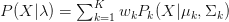
，在哪里 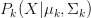 是高斯分布
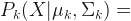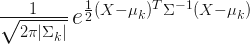
训练资料 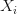 班上的 用于估计参数均值 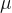，协方差矩阵 和重量 在这k个成分中
最初，它通过K-means算法识别数据中的k个 聚类，并分配相等的权重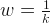每个集群。 然后将k个高斯分布拟合到这k个群集。参数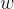，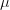和 集群中的所有集群都会迭代更新，直到收敛为止。用于此估计的最普遍使用的方法是期望最大化（EM）算法。
from sklearn.mixture import GMM
gmm = GMM(n_components = 8, n_iter = 200, covariance_type='diag',n_init = 3)
gmm.fit(features)
sklearn.mixture我们使用Python的软件包从features包含MFCC功能的矩阵中学习GMM 。该GMM对象需要的部件数量n_components被装配上的数据，迭代的数量n_iter，以用于估计这些n个分量的参数来执行，共方差的类型covariance_type的特征和次数之间假定n_iter的K-表示要进行初始化。保留给出最佳结果的初始化。fit（）然后，该函数使用EM算法估算模型参数。
以下Python代码用于训练性别模型。该代码针对每个性别运行一次，并source提供相应性别的培训文件的路径。
#train_models.py
import os
import cPickle
import numpy as np
from scipy.io.wavfile import read
from sklearn.mixture import GMM
import python_speech_features as mfcc
from sklearn import preprocessing
import warnings
warnings.filterwarnings("ignore")
def get_MFCC(sr,audio):
features = mfcc.mfcc(audio,sr, 0.025, 0.01, 13,appendEnergy = False)
features = preprocessing.scale(features)
return features
#path to training data
source = "D:\\pygender\\train_data\\youtube\\male\\"
#path to save trained model
dest = "D:\\pygender\\"
files = [os.path.join(source,f) for f in os.listdir(source) if
f.endswith('.wav')]
eatures = np.asarray(());
for f in files:
sr,audio = read(f)
vector = get_MFCC(sr,audio)
if features.size == 0:
features = vector
else:
features = np.vstack((features, vector))
gmm = GMM(n_components = 8, n_iter = 200, covariance_type='diag',
n_init = 3)
gmm.fit(features)
picklefile = f.split("\\")[-2].split(".wav")[0]+".gmm"
# model saved as male.gmm
cPickle.dump(gmm,open(dest + picklefile,'w'))
print 'modeling completed for gender:',picklefile
评估AudioSet语料库的子集
在测试语音样本进行性别检测后，我们首先为它提取MFCC功能，帧大小为25 ms，帧之间重叠10 ms。接下来，我们需要样本每一帧的对数似然分数，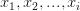，属于每个性别，即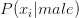和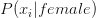是要计算的。使用（2），通过代入和GMM模型的模型。 对模型中的k个高斯分量中的每一个都进行此操作，然后根据取k个 似然的加权总和。模型的参数，就像（1）中一样。当对数运算应用于获得的总和时，将为我们提供该帧的对数似然值。对样本的所有帧重复此过程，并添加所有帧的似然度。
与此类似，通过代入训练后的男性GMM模型的参数值并对所有帧重复上述过程，可以计算出语音是男性的可能性。下面给出的Python代码可以预测测试音频的性别。
#test_gender.py
import os
import cPickle
import numpy as np
from scipy.io.wavfile import read
import python_speech_features as mfcc
from sklearn import preprocessing
import warnings
warnings.filterwarnings("ignore")
def get_MFCC(sr,audio):
features = mfcc.mfcc(audio,sr, 0.025, 0.01, 13,appendEnergy = False)
feat = np.asarray(())
for i in range(features.shape[0]):
temp = features[i,:]
if np.isnan(np.min(temp)):
continue
else:
if feat.size == 0:
feat = temp
else:
feat = np.vstack((feat, temp))
features = feat;
features = preprocessing.scale(features)
return features
#path to test data
sourcepath = "D:\\pygender\\test_data\\AudioSet\\female_clips\\"
#path to saved models
modelpath = "D:\\pygender\\"
gmm_files = [os.path.join(modelpath,fname) for fname in
os.listdir(modelpath) if fname.endswith('.gmm')]
models = [cPickle.load(open(fname,'r')) for fname in gmm_files]
genders = [fname.split("\\")[-1].split(".gmm")[0] for fname
in gmm_files]
files = [os.path.join(sourcepath,f) for f in os.listdir(sourcepath)
if f.endswith(".wav")]
for f in files:
print f.split("\\")[-1]
sr, audio = read(f)
features = get_MFCC(sr,audio)
scores = None
log_likelihood = np.zeros(len(models))
for i in range(len(models)):
gmm = models[i] #checking with each model one by one
scores = np.array(gmm.score(features))
log_likelihood[i] = scores.sum()
winner = np.argmax(log_likelihood)
print"\tdetected as - ", genders[winner],"\n\tscores:female ",log_likelihood[0],",male ", log_likelihood[1],"\n"